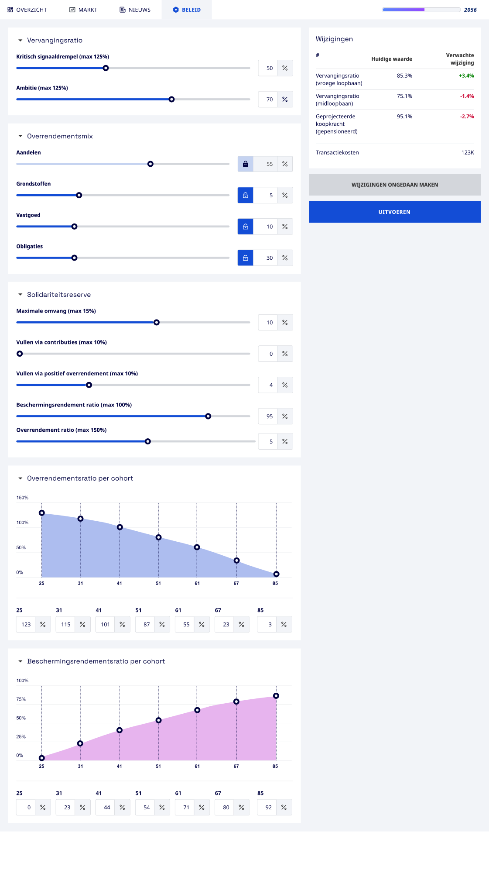

<template id="scene4-controls-template">
  <div id="scene4-controls" data-composition-id="scene4-controls" data-width="1920" data-height="1080">

    <div id="sc4-stage" class="clip"
         data-start="0" data-duration="14" data-track-index="0"
         style="position:absolute; inset:0; width:1920px; height:1080px;
                display:flex; align-items:center; justify-content:center;">

      <div id="sc4-tablet-frame">
        <div id="sc4-tablet-camera"></div>
        <div id="sc4-panel-window">
          <!-- Scrollend gedeelte -->
          
          <!-- Masker rechterkolom: verhindert dat scrollende SVG-rechterkolom zichtbaar is -->
          <div id="sc4-right-mask"></div>
          <!-- Sticky nav overlay: SVG y=0–57 → display y=0–54px -->
          <div id="sc4-sticky-nav">
            
          </div>
          <!-- Sticky Wijzigingen rechterkolom: SVG x=910–1416, y=81–655 (incl. blauwe UITVOEREN-knop) -->
          <div id="sc4-sticky-wijz">
            
          </div>
          <!-- UITVOEREN-knop overlay: pulseer bij klik van de cursor -->
          <div id="sc4-uitvoeren-btn"></div>
          <!-- Muiscursor -->
          
        </div>
        <div id="sc4-tablet-home"></div>
      </div>
    </div>

    <style>
      #scene4-controls { background: #ceecff; overflow: hidden; }

      /* Groter tablet voor leesbaarheid: 1400×900 (was 1160×800) */
      #sc4-tablet-frame {
        position: relative;
        width: 1400px;
        height: 900px;
        background: #e0e0e0;
        border-radius: 20px;
        padding: 22px;
        box-sizing: border-box;
        box-shadow: 0 20px 60px rgba(0,0,0,0.20), 0 6px 20px rgba(0,0,0,0.12);
        z-index: 1;
        opacity: 0;
      }
      #sc4-tablet-camera {
        position: absolute; top: 5px; left: 50%; margin-left: -4px;
        width: 8px; height: 8px; border-radius: 50%; background: #aaa; z-index: 2;
      }
      #sc4-tablet-home {
        position: absolute; bottom: 5px; left: 50%; margin-left: -40px;
        width: 80px; height: 4px; border-radius: 2px; background: #aaa;
      }
      /* Window: 1400 - 2×22 = 1356px breed, 900 - 2×22 = 856px hoog */
      #sc4-panel-window {
        position: relative; width: 1356px; height: 856px;
        border-radius: 8px; overflow: hidden;
        background: #F2F4F8;
      }
      /* SVG 1440px breed → geschaald naar 1356px → hoogte: 2629 × (1356/1440) ≈ 2475px */
      /* clip-path verbergt rechterkolom (x=857–1356) in de scrollende laag */
      #sc4-panel-img {
        position: absolute; top: 0; left: 0; width: 1356px; height: auto;
        clip-path: inset(0 499px 0 0);
      }

      /* Masker rechterkolom: legt paneel-achtergrond over scrollende laag (z=2, onder sticky z=3) */
      #sc4-right-mask {
        position: absolute; top: 0; left: 857px;
        width: 499px; height: 100%;
        background: #F2F4F8;
        z-index: 2; pointer-events: none;
      }

      /* Sticky nav: knipt SVG in op eerste 54px (= 57px SVG × 0.9417 schaal) */
      #sc4-sticky-nav {
        position: absolute; top: 0; left: 0;
        width: 1356px; height: 54px;
        overflow: hidden; z-index: 3; pointer-events: none;
      }
      #sc4-sticky-nav img {
        position: absolute; top: 0; left: 0; width: 1356px; height: auto;
      }

      /*
        Sticky Wijzigingen: SVG x=910, y=81 t/m y=655 (incl. blauwe UITVOEREN-knop)
        Schaal 0.9417: left=857px, top=76px, w=477px, h=541px
        img offset: left=-857px, top=-76px
      */
      #sc4-sticky-wijz {
        position: absolute; top: 76px; left: 857px;
        width: 477px; height: 541px;
        overflow: hidden; z-index: 3; pointer-events: none;
      }
      #sc4-sticky-wijz img {
        position: absolute; top: -76px; left: -857px; width: 1356px; height: auto;
      }

      /* UITVOEREN-knop overlay — liegt precies over de knop, matcht de kleur */
      #sc4-uitvoeren-btn {
        position: absolute;
        top: 545px; left: 860px;
        width: 466px; height: 62px;
        background: #1566d4;
        border-radius: 4px;
        pointer-events: none; opacity: 0; z-index: 4;
        transform-origin: center center;
      }

      /* Cursor */
      #sc4-cursor {
        position: absolute; top: 0; left: 0;
        width: 28px; height: auto;
        z-index: 5; pointer-events: none; opacity: 0;
      }
    </style>

    <script>
      window.__timelines = window.__timelines || {};
      const tl = gsap.timeline({ paused: true });

      // Tablet rustig in beeld (power2.out, ~0.8s)
      tl.fromTo("#sc4-tablet-frame",
        { opacity: 0, scale: 0.94, y: 28 },
        { opacity: 1, scale: 1, y: 0, duration: 0.8, ease: "power2.out" }, 0);

      // Sectie 1 — bovenkant paneel leesbaar (0.8–3.0s stilstand)

      // Sectie 2 — scroll naar sliders (3.0–5.5s)
      tl.to("#sc4-panel-img", { y: -500, duration: 2.5, ease: "sine.inOut" }, 3.0);
      // Stilstand sliders (5.5–7.5s)

      // Sectie 3 — scroll naar cohort-grafieken en wijzigingen-tabel (7.5–11.0s)
      tl.to("#sc4-panel-img", { y: -1100, duration: 3.5, ease: "sine.inOut" }, 7.5);
      // Stilstand grafieken/tabel tot einde (11.0–14.0s)

      // Wijzigingen-panel: direct zichtbaar (geen fade-in)

      // ── Cursor: verschijnt pas nadat scroll volledig is (t=11.0) ──
      // Startpositie: net onder de UITVOEREN-knop, op passende afstand
      tl.set("#sc4-cursor", { x: 1060, y: 640 }, 0);
      // Fade in na voltooien scroll
      tl.to("#sc4-cursor", { opacity: 1, duration: 0.5, ease: "power2.out" }, 11.2);
      // Cursor beweegt rustig omhoog naar de knop
      tl.to("#sc4-cursor", { y: 575, duration: 0.8, ease: "power2.inOut" }, 11.8);

      // Klik op UITVOEREN (t=12.4 — ruim vóór T2 start t=12.8)
      tl.to("#sc4-cursor",       { scale: 0.82, duration: 0.1, ease: "power2.in"  }, 12.4);
      tl.to("#sc4-cursor",       { scale: 1,    duration: 0.15, ease: "power2.out" }, 12.5);

      // ── UITVOEREN-knop klik-animatie: knop verschijnt, pulseert groter, fade out ──
      tl.to("#sc4-uitvoeren-btn", { opacity: 1,    duration: 0.05                             }, 12.35);
      tl.to("#sc4-uitvoeren-btn", { scale: 1.07,   duration: 0.18, ease: "power2.out"         }, 12.4);
      tl.to("#sc4-uitvoeren-btn", { scale: 1,      duration: 0.22, ease: "power2.inOut"       }, 12.58);
      tl.to("#sc4-uitvoeren-btn", { opacity: 0,    duration: 0.4,  ease: "power2.out"         }, 12.58);

      tl.set({}, {}, 14);

      window.__timelines["scene4-controls"] = tl;
    </script>
  </div>
</template>
